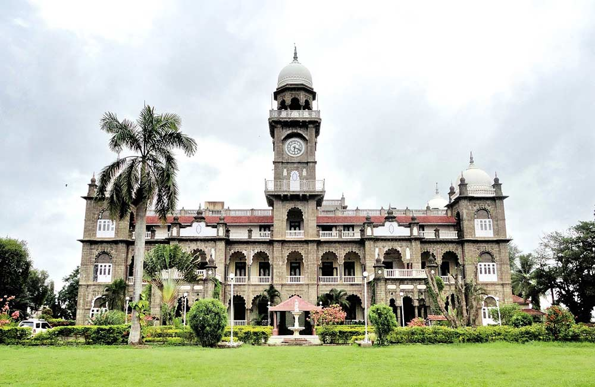

1. Matheran
The closest hill station to Mumbai, Matheran was discovered in 1850 by the British during their occupation of India and
subsequently developed into a popular summer retreat. At height of 800 meters (2,625 feet) above sea level, this serene
place provides a cooling escape from searing temperatures. However, the most unique thing about it and what makes it so
special, is that all vehicles are banned there -- even bicycles. It's a soothing place to relax away from any noise and
pollution. Get there by taking the scenic toy train.

2. Kolhapur
The historical and cultural city of Kolhapur is a lesser-known tourist destination alongside the Panchganga River in southern
Maharashtra. Yet, it certainly has plenty to offer! Its magnificent temples are one of the main attractions, with the Mahalaxmi
Temple being the focus. The city has a long line of both Hindu and Muslim rulers, and has been the site of intense confrontations.
Prior to India's Independence, from 1700 it was controlled by the Maratha Empire and the British. The new palace of the Maharaja
of Kolhapur, built in 1884, has grandiose Indo-Saracenic architecture. It now houses the Shree Chhatrapati Shahu Museum, containing
memorabilia of Kolhapur's rulers. Kolhapur also has a couple of interesting claims to fame: the famous Kolhapuri chappals
(shoes) originated from there and the city is said to produce the best Kushti wrestlers.
3. Mahabaleshwar
For fresh strawberries (as well as mulberries, raspberries, and gooseberries) head to Mahabaleshwar in the Western Ghat mountains
(known as the Sahyadri mountains in Maharashtra). Strawberry season runs from November to March and you can feast on them at
Mapro Gardens and Archie's Farm. Otherwise, go trekking, fishing, boating, horse riding, or take in the views at one of the many
sightseeing points and lookouts (there are nearly 30 of them!).
4. Lonavala
Just two hours southeast of Mumbai, and halfway between Mumbai and Pune, Lonavala provides an eclectic blend of hills, history and
adventure. Its a popular misty monsoon destination, and its lush surroundings have been the backdrop of many Bollywood movie song
and dance scenes. Attractions include forts, lookouts, lakes, dams, and waterfalls (during the monsoon season). Also there are agencies which
conducts paragliding in Kamshet, close to Lonavala. The ancient rock-cut Karla caves are also worth visiting.